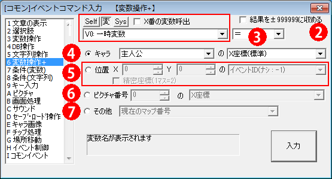

イベントコマンド 【変数操作＋】
指定した変数に特殊な値を読み込んだり、計算を行ったりできます。

【各部の説明】
１．代入先の指定
代入先の変数を選択します。
・Self/変/Sys … 代入先の種類を選択します。前からセルフ変数/通常変数と予備変数/システム変数、です。
・X番の変数呼び出し … 「呼び出した変数の値」の変数を呼び出します。たとえば「通常変数0番」を指定したときに通常変数0番に2000005（通常変数5番を表す値）が格納されてれば、最終的に「通常変数5番」を代入先とします。
２．変数操作オプション
・結果を±999999に収める … 値の増減が起きても変数の領域（100万以上）に踏み込まないようにします。変数の値が100万を超えると別の変数の値を呼び出してしまうため、それを避
けるためのチェックです。これをオンにすると、結果の値が100万以上になると999999に、-100万以下だと-999999に変更します。
３．代入演算子
代入の仕方を指定します。「＝」「＋＝」「−＝」「×＝」「÷＝」「％＝」「引上げ」「引下げ」「絶対値」から選択可能です、詳しい説明は「計算式の説明」をご覧下さい。
４．代入する値「キャラの状態」
主人公やイベントキャラクターの座標などを取得します。
なおイベントが「一時消去」されていても、座標など一部の値は消去される直前の数値を得られます。
取得可能な項目は以下の通りです。
・X/Y座標（標準） … 1マスを1と数えたときのX/Y座標です。
・X/Y座標（精密） … 0.5マスを1と数えたときのX/Y座標です。キャラクターの足元1x1マスのうちの左上座標を返します。
・地面からの高さ（ピクセル数） … イベントの現在の高さ（9100000〜で始まるキャラクター状態変数で指定可能)をピクセル数で得られます。
・向き（1〜9、テンキーに対応） … キャラクターの向きです。方向と値の対応は以下の図Aをご覧ください。
|
・画面X/Y座標 … 現在の画面座標をピクセル数で得ます。たとえば、320x240解像度時に画面中心にキャラクターがいた場合、Xが160、Yが120といった値を得ることができます。
・影グラフィック番号 … イベントに設定されている影のグラフィック番号です。
・現在地点タイルのタグ番号 … 現在いる場所のタイルのタグ番号です。
・イベントID … 対象のイベントIDを取得します。対象を「このイベント」にしたときだけ有用です。
・画面内にいる？（1=YES 0=NO) … 対象が（マップ拡大率100％時の）画面から±1マス内の範囲にいるかどうかを取得します。その範囲内にいる場合は1になります。並列イベントで、画面外のキャラに処理をさせたくない場合に使えるでしょう。
・起動中ﾍﾟｰｼﾞ[0=ﾅｼ/1〜=ﾍﾟｰｼﾞ数/-1=消去] … 対象の起動中イベントページを取得します。無い場合は0になります。「一時消去」されている場合は-1を返します(Ver3.210より)。
・起動条件（0:決定 -4:イベント接触) … 対象の起動中イベントページの起動条件を取得します。0=決定キーで実行 1=自動実行 2=並列実行 3=プレイヤー接触 4=イベント接触になります。一時消去時は-1です(Ver3.210より)
・接触範囲拡張Ｘ/Ｙ … 対象の接触範囲拡張を取得します。
・アニメパターンID[0-4] … 現在のアニメーションのパターン番号を取得します。3枚なら0-2、5枚アニメなら0ｰ4の値を取ります。一時消去時は-1を返します。
・移動中？[1=YES 0=NO] … 「そのキャラが移動中の場合（マスとマスの間にいる）」か、「エフェクトの【ピクセル移動】で1ピクセル以上移動できた場合」に1を返します。
・キャラチップ横分割数 … そのキャラの画像の横分割数を返します。
・キャラチップ縦分割数 … そのキャラの画像の縦分割数を返します。
・現在ﾋﾟｸﾁｬﾊﾟﾀｰﾝ[1〜12+] … そのキャラのピクチャにおけるパターン番号を返します。一時消去時は-1を返します。
・不透明度 … そのキャラの不透明度を返します（Ver3.330より）
・ピクセル補正値X/Y[0〜(半ﾀｲﾙ-1)] … 「エフェクト」コマンドのピクセル移動をしたとき、精密座標の区切りから加算されているピクセル値を返します。つまり0〜[ﾀｲﾙ半分-1] pxまでの値を返します。
５．代入する値「指定位置の情報」
・「精密座標」チェック … これをオンにしていると、1マスを2と換算した座標の情報を求めます。
指定したマップX、Y位置の情報を得ます。取得可能な項目は以下の通りです。
・イベントID（なし：-1） … 指定座標のイベントIDを得ます、イベントが存在しない場合は-1が代入されます。精密座標にした場合、キャラの左上座標が精密座標と一致した場合にイベントIDを返します。
・通行可能（タイルのみ） … 指定座標のタイルの通行可能設定を得ます。※精密座標の場合は1/4マス分の通行可能状態しか得られないので、キャラが通過できるか調べる場合は複数マス分判定する必要があります。
・通行可能（タイル・Ev両方） … 指定座標の、イベントとタイル両方を考慮した通行可能設定を得ます。※精密座標の場合は1/4マス分の通行可能状態しか得られないので、キャラが通過できるか調べる場合は複数マス分判定する必要があります。
・最も上にあるチップ番号（1-31:オート/32-：etc） … 指定座標の、最も上のレイヤーに存在するチップ番号を取得します。このとき、レイヤー2、3の透明チップは無視されます。0は透明チップ、1〜31はオートタイル、32以降は基本タイルです。
・レイヤー1/２/３のチップ番号 … 指定座標の、各レイヤーに存在するチップ番号を取得します。
・最も上にあるタイルのタグ番号 … 指定座標の、最も上のレイヤーに存在するタイルの「タグ番号」を得ます。なお、タグ0番であるレイヤーは無視されます。
・レイヤー１/２/３のタイルのタグ番号 … 指定座標の、各レイヤーに存在するタイルの「タグ番号」を得ます。
・レイヤー１/２/３のタイル属性[★1+▲2+↓4+□8+■16] … 指定座標の、各レイヤーのタイル属性を得ます。属性は足されて計算されるので、それぞれの属性値は「条件（変数）」の「ビット積」などで取得してください。
・最も上のｵｰﾄﾀｲﾙﾁｯﾌﾟ番号 … 最も上ﾚｲﾔｰにあるオートタイルのチップ番号を返します。
・最も上のｵｰﾄﾀｲﾙ縦ﾊﾟﾀｰﾝ(1-5の4桁/精密1桁) … 最も上レイヤーにあるオートタイルの縦パターン状態を返します。精密なら1桁、そうでなければ1154のように4桁で返されます。
・最も上のｵｰﾄﾀｲﾙ横ｱﾆﾒﾊﾟﾀｰﾝ(1-) … 最も上レイヤーにあるオートタイルの今のアニメパターンを返します。
・最も上のｵｰﾄﾀｲﾙ横ｱﾆﾒﾊﾟﾀｰﾝ総数 … 最も上レイヤーにあるオートタイルの総アニメパターン数を返します。
・[精密]最も上のｵｰﾄﾀｲﾙﾋﾟｸﾁｬﾊﾟﾀｰﾝ … 「精密」専用です。最も上レイヤーにあるオートタイルの、1/4ずつのピクチャとしてのパターン番号を返されます。「精密」がオンでない場合は-1が返されます。
・最も上のｵｰﾄﾀｲﾙﾋﾟｸﾁｬﾊﾟﾀｰﾝ総数 … 最も上レイヤーにあるオートタイルの、1/4ずつのピクチャとしてのパターン総数を返されます。
６．代入する値 「ピクチャの情報」
指定したピクチャ番号の情報を得ます。取得可能な項目は以下の通りです。
・X座標・Y座標
・基準位置[0左/10中央/20右+0上1中2下] （Ver3.330より）
ピクチャ基準位置の「左上（0）」や「中心（11）」「右上（20）」「右下（22）」といった値を返します。
・画像サイズ（縦・横）
※このサイズとは、拡大率100％時の値です。
※文字列ピクチャの場合、計算の都合で「文字開始座標(左上)からのサイズ」を返します。
もし\mx[-10]や\ax[-10]などで文字開始座標より左や上に文字がある場合、本来より小さいサイズ値が返されます。この例の場合は10小さい値が返されます。
・パターン番号
・不透明度
・角度
・拡大率（縦・横）
・Zオーダー
・マウスカーソル重なってる？（1＝Yes）
マウスカーソルがそのピクチャの範囲内にあるとき、1を返します。
・ピクチャが使用されている？（1＝Yes）
当該番号のピクチャが「表示」状態なら1を、「消去」状態なら0を返します。
そのピクチャ番号がすでに使用されているかどうかを調べるのに便利です。
・文字列・表示完了？（1＝Yes）
そのピクチャが文字列ピクチャだった場合、文字列が全て表示済みならば1を返します。
表示途中なら0を返し、文字列ピクチャでない場合は-1を返します。
・[自由変形時]左/右・上/下・X/Y座標
そのピクチャが自由変形で描画されていているならば指定した座標値を返します。ピクチャが存在しない場合は-1、自由変形でない場合は0をかえします。
・[動画時]現在再生位置（ミリ秒）
ピクチャで動画を再生しているときに現在の「再生位置」をミリ秒で返します。ピクチャが存在しない場合は-1。動画でないピクチャが表示されている場合は0を返します。
・[動画時]総再生再生時間（ミリ秒/ogv形式のみ）
ピクチャで動画を再生しているときに「総再生時間」をミリ秒で返します。ogv形式以外では数値が返されない可能性があります。ピクチャが存在しない場合は-1。動画でないピクチャが表示されている場合は0を返します。
※ここで取得できるピクチャの情報は、「エフェクト」による補正を無視した値になりますので、注意してください。
【※ マウスカーソル重なってる？（1＝Yes）の補足説明 2010/04/13】
この処理は、座標の位置判定を「画面描画更新時」に判定しているので、
フレームスキップを行っている場合、反映が数フレーム遅れることがあります。
またその処理の特性上、同フレーム中で処理時間0にして行ったピクチャ移動なども
反映されませんので、ご利用になる際は、その点をご注意下さい。
７．代入する値「その他の情報」
その他の情報を得ることができます。取得可能な項目は以下の通りです。
・現在のマップ番号
・現在のマップのタイルセット番号
・再生中のBGM/BGS番号
・BGM/BGSの再生位置（ミリ秒 / MIDIならTick値）
・現在BGM/BGSの曲の長さ（ミリ秒 / MIDIならTick値）
・マウス左/真ん中/右クリック状態（平常＝0、押=1、新押＝2）
マウスの各クリック状態を取得します。何も押してないときは0、
新しく押された瞬間の1フレームのみ2の値を、それ以降押しっぱなしなら1を取得。
・マウスホイール変化（1フレーム前からの変化値）
マウスホイールが前フレームかどれだけ回転したかを取得します。
プレイ環境によっては、回転数が2以上の値を取ることに注意してください。
・マウスX/Y座標の変化（1フレーム前からの変化値）
マウスのX、Y座標が前フレームからどれだけ変化したかを取得します。
・マウス座標のEvID（小さいID優先、なければ-1）
現在マウスカーソルが重なっているイベントのIDを得ます、ない場合は-1を取得。
イベントの「当たり判定正方形」フラグがオンなら
縦1チップx横1チップの範囲にカーソルを合わせることでIDが取得でき、
オフなら、縦0.5チップ×横1チップの範囲でIDが取得できます。
重なっているときは小さい方のイベントIDを取得します。
・このマップイベントID（コモンなら呼び出し元マップID）
文字通り、このコマンドが処理されているマップイベントのIDを取得します。
コモンイベントから呼び出されている場合は、呼び出し元のマップイベントIDを取得します。
・マップのサイズ[横/縦]
現在のマップのサイズを取得します。
・このコモンイベントID（コモンでなければ-1）
文字通り、このコマンドが処理されているコモンイベントのIDを取得します。コモンイベントでない場合は、-1を返します。
・処理中の自動/接触/決定キー起動Ev番号[コモンなら+500000]
並列イベントで呼び出すと、実行中の自動/接触/決定キー起動EvのIDを取得します。
コモンイベントの場合500000+IDとなります。
・処理中の行数 [自動/接触/決定キー起動Ev]
並列イベントで呼び出すと、実行中の自動/接触/決定キー起動Evのうち、
何行目を処理しているかを取得できます。
・消費メモリ量[MB]
現在このゲームで消費されているメモリ量をMB（メガバイト）単位で取得できます。
メモリ負荷を確かめるのにご利用ください。
・残り物理メモリ量[MB]
現在Game.exeを動作させているパソコンの「残り物理メモリ量（RAM）」をMB単位で取得できます。
これが「150」を切るようだとメモリ不足寸前の大ピンチの可能性があるので、残り150を切った場合は「大きな画像の読み込み」を減らす、といった対応を行うとより安定する可能性があります。
（といっても、搭載メモリ1GBのパソコンでもない限り、そうそう問題は起きないと思いますが）
・言語[1:日/2:英/3:西欧/4:中国(簡)/5:中国(繁)/6:ﾊﾝｸﾞﾙ]
ゲーム設定で設定されている「ゲーム内の言語」に応じた値を返します。翻訳されたゲームデータに応じて処理を分岐させたい場合などに使います。
・ゲームパッドタイプ(DirectInput=0/XInput=1) （Ver3.23より）
パソコンに挿されている1つめのゲームパッドがDirectInput方式（0）かXInput方式（1）かを返します。
DirectInputの場合、PS4/PS5/Switchコントローラなら基本的に動作しますが、特殊なゲームパッドだと右スティックやトリガーの値が正常に取得できない場合があります。
【変数操作+】の裏技
●「位置」指定のマップ外指定エラーを出さないようにする （Ver3.04より）
位置指定でマップ外を選択すると「テストプレイ時」に「1回だけ」エラーが発生しますが、それを一度も出さないようにすることができます。
エラーが出ても処理自体は行われるため、座標あふれを気にしない場合にお使いください。
【手順】
1. Game.exeのある場所で右クリック→新規作成→テキストドキュメント でテキストを作成。
2. 1のファイルを「Game_PosErrorStop.txt」に名前変更し、Game.exeと同じ場所に置く。
3. この状態でテストプレイすると、「変数操作+」の「位置」エラーを最初から抑制することができます。